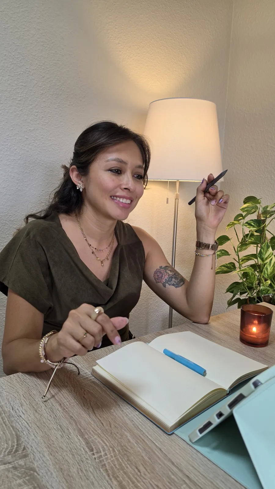

01
Psicoterapia Individual
- Ansiedad y estrés
- Trauma y experiencias difíciles
- Autoestima y relación contigo misma/o
- Autocuidado
- Relaciones sanas
- Duelo y pérdidas
- Regulación emocional
- Terapia en adultos
- Terapia en adolescentes
Psicóloga General Sanitaria en Santa Cruz de Tenerife y San Isidro
Este es un espacio creado con mucho cuidado, pensado para acompañarte en esos momentos en los que todo se siente un poco más difícil o confuso; cuando la vida se hace cuesta arriba, las emociones se enredan o simplemente sientes que necesitas parar y escucharte.
Mi labor es crear un espacio donde puedas expresar lo que estás viviendo con libertad y sin juicios. Un espacio para comprender tu historia y construir, poco a poco, una forma de estar mejor.
Quizás estás atravesando un cambio, una pérdida, un malestar difícil de nombrar, o simplemente la necesidad de ser escuchada/o. Sea cual sea tu momento, aquí hay un lugar para ti.
Trabajo desde un enfoque integrador, adaptando cada proceso a lo que necesitas y construyendo contigo un camino más habitable y saludable.
No todos los procesos parten del mismo lugar. El acompañamiento se adapta a la etapa vital, las necesidades y el contexto de cada persona.
Desde siempre me ha movido una idea muy simple: estar ahí para las personas.
Acompañarlas cuando todo se vuelve un poco más difícil, cuando las emociones se enredan o cuando simplemente hace falta alguien que escuche de verdad.
He tenido el privilegio de trabajar con personas mayores, niños, adolescentes y familias en situaciones muy diversas. Cada experiencia me ha enseñado algo distinto: la importancia de la empatía, del silencio, de respetar los tiempos del otro y, sobre todo, de no perder nunca de vista a la persona que hay detrás de cualquier dificultad.
Mi compromiso es ofrecerte un acompañamiento ético, cuidado y auténtico, donde lo más importante seas tú.
La práctica psicoterapéutica exige actualización constante y criterio clínico.

La primera sesión es un espacio para conocernos, entender qué te ha llevado a consulta y valorar conjuntamente qué necesitas. No tienes que llegar con todo claro ni saber exactamente qué decir.